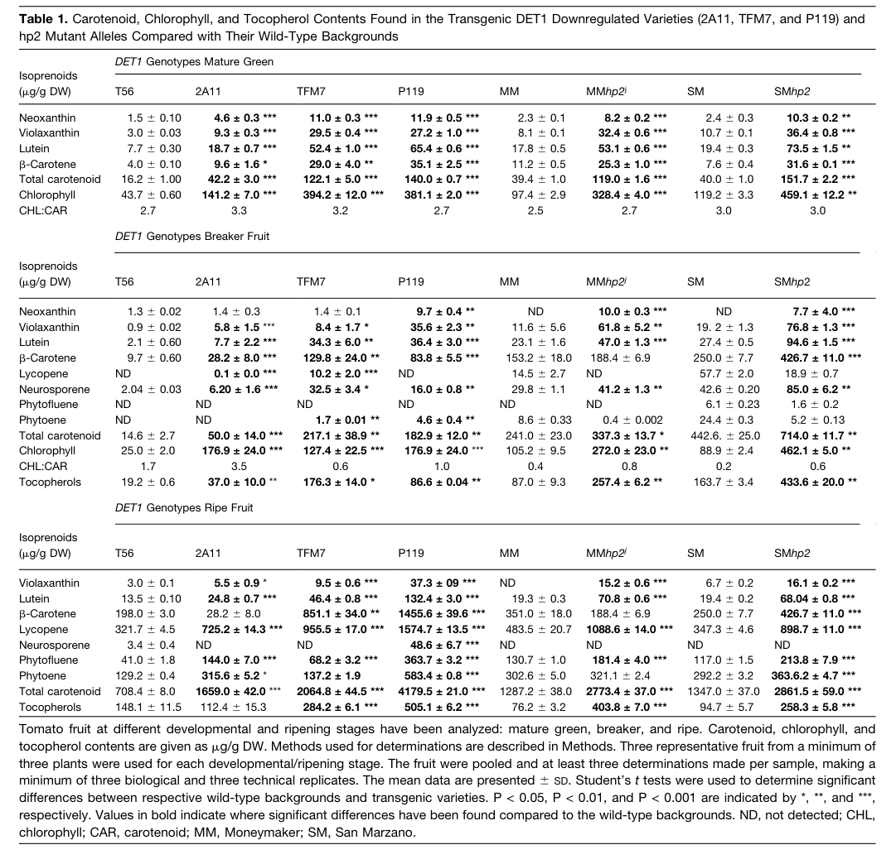

Tomato DET1 (Q9ZNU6; gene DET1, synonyms hp2/dg; also called tDET1, "Light-mediated development protein DET1", "High pigmentation protein 2", "Protein dark green") is the tomato ortholog of Arabidopsis DE-ETIOLATED1 and is genetically defined as the HIGH PIGMENT 2 (hp2) locus, with dark-green (dg) as a further allele. It is a conserved NEGATIVE regulator of photomorphogenesis - a repressor that holds back light-driven development. Mechanistically it is not an enzyme acting on a small-molecule substrate but a nuclear regulatory adaptor: it participates in the CDD complex (with DDB1 and the E2 variant COP10) and, in tomato, is a substrate-selection component of a CUL4-DDB1-DET1 (CRL4) E3 ubiquitin ligase that targets transcription factors for 26S-proteasome degradation. The best-defined tomato substrate is the GOLDEN2-LIKE 2 (SlGLK2) transcription factor; in Arabidopsis the repressive output is mediated by degradation of photomorphogenesis-promoting factors such as HY5. DET1 localizes to the nucleus (UniProt; tomato YFP assays show nucleus and cytoplasm). Loss-of-function alleles (hp-2, hp-2j, dg) are constitutively/exaggeratedly photomorphogenic ("high pigment"): plants are darker and shorter with elevated anthocyanins, and fruits over-accumulate chlorophyll, carotenoids (lycopene), tocopherols and flavonoids - the basis of DET1 down-regulation as a biofortification target. The tomato hp-2 phenotype is strictly dependent on active phytochrome, placing DET1 as a downstream nuclear repressor within (rather than a photoreceptor-level component of) the light/phytochrome signaling network.
| GO Term | Evidence | Action | Reason |
|---|---|---|---|
|
GO:0009585
red, far-red light phototransduction
|
IEA
GO_REF:0000043 |
MODIFY |
Summary: SPKW (GO_REF:0000043) annotation derived from the UniProt keyword "Phytochrome signaling pathway"; snapshot-only, removed in the current GOA release. DET1 is a conserved NEGATIVE regulator of photomorphogenesis - a downstream nuclear repressor acting via a CUL4-DDB1-DET1 E3 ligase / the CDD complex - not a photoreceptor-level phototransduction component.
Reason: GOA's removal of this keyword-derived annotation was JUSTIFIED, and the term is mis-placed. GO:0009585 is defined as "the sequence of reactions within a cell required to convert absorbed photons from red or far-red light into a molecular signal" - i.e. photoreceptor-level signal conversion (the job of phytochromes), which DET1 does not perform. DET1 acts far downstream: it is a nuclear repressor that, through the CUL4-DDB1-DET1 (CRL4) ubiquitin ligase and the CDD complex, promotes degradation of photomorphogenesis-promoting factors such as HY5/transcription factors, thereby repressing light-driven development [file:SOLLC/DET1/DET1-uniprot.txt; file:SOLLC/DET1/DET1-deep-research-falcon.md]. Genetically, tomato hp-2/DET1 was cloned precisely because HP genes were proposed to be negative regulators of phytochrome signal transduction, and loss of DET1 yields exaggerated/constitutive photomorphogenesis [PMID:9927635]. The accurate term for DET1's role is therefore "negative regulation of photomorphogenesis" (GO:0010100), not red/far-red phototransduction.
Proposed replacements:
negative regulation of photomorphogenesis
Supporting Evidence:
PMID:9927635
It has been proposed that HP genes encode negative regulators of phytochrome signal transduction.
PMID:9927635
encodes the tomato homolog of the nuclear protein DEETIOLATED1 (DET1) from Arabidopsis. Mutations in DET1 are known to result in constitutive deetiolation in darkness.
file:SOLLC/DET1/DET1-uniprot.txt
Repression of photomorphogenesis is
CC probably mediated by ubiquitination and subsequent degradation of
CC photomorphogenesis-promoting factors such as HY5.
|
|
GO:0010017
red or far-red light signaling pathway
|
IEA
GO_REF:0000043 |
MODIFY |
Summary: SPKW (GO_REF:0000043) annotation derived from the UniProt keyword "Phytochrome signaling pathway"; snapshot-only, removed in the current GOA release. DET1 participates in light/phytochrome signaling, but as a broad NEGATIVE regulator of photomorphogenesis rather than a red/far-red-specific signaling component.
Reason: GOA's removal of this keyword-derived annotation was reasonable. The term is not entirely wrong - the tomato hp-2/DET1 phenotype is strictly dependent on active phytochrome, so DET1 does act within the red/far-red (phytochrome) signaling network [PMID:9927635] - but GO:0010017 ("the series of molecular signals initiated upon sensing by photoreceptor molecules of red light or far red light") implies a wavelength-specific signaling role. DET1 is instead a convergent, downstream nuclear repressor of photomorphogenesis that is not red/far-red-specific: in the conserved CDD/CRL4 machinery it represses outputs of multiple photoreceptor pathways (its Arabidopsis context includes blue/UV cryptochrome inputs), acting by targeting photomorphogenesis-promoting factors (e.g. HY5) for ubiquitin-dependent degradation [file:SOLLC/DET1/DET1-uniprot.txt]. The dg allele links the DET1 locus to the photomorphogenic de-etiolation response generally [PMID:12589545]. The function is therefore more accurately captured by "negative regulation of photomorphogenesis" (GO:0010100).
Proposed replacements:
negative regulation of photomorphogenesis
Supporting Evidence:
PMID:9927635
whereas det1 mutations are epistatic to mutations in phytochrome genes, analysis of similar double mutants in tomato showed that manifestation of the phenotype of the hp-2 mutant is strictly dependent upon the presence of active phytochrome.
PMID:12589545
the tomato homolog of the DEETIOLATED1 (DET1) gene, involved in the signal transduction cascade of light perception and morphogenesis.
file:SOLLC/DET1/DET1-uniprot.txt
FUNCTION: Component of light signal transduction machinery.
|
|
GO:0016567
protein ubiquitination
|
IBA
GO_REF:0000033 |
ACCEPT |
Summary: IBA annotation propagated across the DET1 phylogenetic group. DET1 is a substrate- selection component of a CUL4-DDB1-DET1 (CRL4) E3 ubiquitin ligase that drives ubiquitination and proteasomal degradation of regulatory transcription factors.
Reason: Well supported and core to DET1's mechanism. In tomato, DET1 is part of a CUL4-DDB1-DET1 E3 ligase complex that mediates ubiquitin-conjugated degradation of the GOLDEN2-LIKE 2 (SlGLK2) transcription factor, with two ubiquitination-relevant lysines (K11, K253) and MG132-sensitive turnover [file:SOLLC/DET1/DET1-deep-research-falcon.md]. The UniProt FUNCTION statement likewise attributes DET1's repression of photomorphogenesis to ubiquitination and degradation of factors such as HY5 [file:SOLLC/DET1/DET1-uniprot.txt]. The IBA term is at an appropriate level of specificity for the process the complex carries out.
Supporting Evidence:
file:SOLLC/DET1/DET1-deep-research-falcon.md
promotes **ubiquitin-mediated proteasomal degradation** of the transcription factor **GOLDEN2-LIKE 2 (SlGLK2)**.
file:SOLLC/DET1/DET1-uniprot.txt
Repression of photomorphogenesis is
CC probably mediated by ubiquitination and subsequent degradation of
CC photomorphogenesis-promoting factors such as HY5.
|
|
GO:0031461
cullin-RING ubiquitin ligase complex
|
IBA
GO_REF:0000033 |
MODIFY |
Summary: IBA annotation: DET1 is part of a cullin-RING ubiquitin ligase complex. The tomato and Arabidopsis evidence specifies this as a CUL4-based (CRL4) complex, so a more precise term is available.
Reason: The annotation is correct but can be made more informative. DET1 specifically assembles into a CUL4-DDB1-DET1 cullin4-RING (CRL4) ligase: in Arabidopsis, CUL4 assembles with DDB1, RBX1, DET1 and DDB2 in vitro and in planta [PMID:16792691], and in tomato DET1 is part of a CUL4-DDB1-DET1 E3 ligase complex [file:SOLLC/DET1/DET1-deep-research-falcon.md]. GO:0080008 "Cul4-RING E3 ubiquitin ligase complex" is defined as a complex "in which a cullin from the Cul4 family and a RING domain protein form the catalytic core; substrate specificity is conferred by an adaptor protein", which precisely describes DET1's complex. MODIFY to the CUL4-specific child term.
Proposed replacements:
Cul4-RING E3 ubiquitin ligase complex
Supporting Evidence:
PMID:16792691
Arabidopsis cullin 4 is shown to assemble with DDB1, RBX1, DET1 and DDB2 in vitro and in planta.
file:SOLLC/DET1/DET1-deep-research-falcon.md
the tomato hp1/hp2 loci (DDB1/DET1) are described as core components of a **CUL4-type E3 ubiquitin ligase** controlling plastid levels and pigment accumulation in fruit.
|
|
GO:0031625
ubiquitin protein ligase binding
|
IBA
GO_REF:0000033 |
ACCEPT |
Summary: IBA annotation: DET1 binds the cullin-RING ubiquitin ligase machinery (DDB1/CUL4), anchoring it within the CRL4/CDD complex.
Reason: Supported. DET1 physically associates with DDB1 and CUL4: Arabidopsis CUL4 assembles with DDB1, RBX1 and DET1 [PMID:16792691], and the IntAct interaction underlying the IPI annotation in this gene is with DDB1 (UniProtKB:Q8LGH4). In tomato, SlDET1 co-occurs in the CUL4-DDB1-DET1 complex [file:SOLLC/DET1/DET1-deep-research-falcon.md]. Binding to the ligase scaffold is consistent with DET1's role as the CRL4 substrate-recognition adaptor; the IBA term is appropriate.
Supporting Evidence:
PMID:16792691
CUL4 associates with DDB1 and DET1
file:SOLLC/DET1/DET1-deep-research-falcon.md
SlGLK2 physically associates with SlDET1 (and SlDDB1/SlCUL4) in plant cells
|
|
GO:0032436
positive regulation of proteasomal ubiquitin-dependent protein catabolic process
|
IBA
GO_REF:0000033 |
ACCEPT |
Summary: IBA annotation: DET1 promotes proteasomal degradation of its substrate transcription factors. Directly supported by tomato data showing DET1-dependent turnover of SlGLK2.
Reason: Supported and consistent with DET1's repressor mechanism. As the substrate-selection adaptor of the CRL4 ligase, DET1 promotes ubiquitin-26S-proteasome degradation of target proteins: SlGLK2 turnover is retarded when CUL4/DDB1/DET1 are impaired and is stabilized by the proteasome inhibitor MG132 [file:SOLLC/DET1/DET1-deep-research-falcon.md]; in Arabidopsis the repressive output is degradation of photomorphogenesis-promoting factors such as HY5 [file:SOLLC/DET1/DET1-uniprot.txt]. The IBA term accurately captures DET1's positive role in driving substrate proteolysis.
Supporting Evidence:
file:SOLLC/DET1/DET1-deep-research-falcon.md
its turnover is retarded when CUL4/DDB1/DET1 are genetically impaired; proteasome inhibition (MG132) stabilizes SlGLK2.
file:SOLLC/DET1/DET1-uniprot.txt
Repression of photomorphogenesis is
CC probably mediated by ubiquitination and subsequent degradation of
CC photomorphogenesis-promoting factors such as HY5.
|
|
GO:1990756
ubiquitin-like ligase-substrate adaptor activity
|
IBA
GO_REF:0000033 |
ACCEPT |
Summary: IBA annotation: DET1 functions as the substrate-recognition adaptor of the CRL4 E3 ligase, bridging target transcription factors to the ubiquitination machinery. This is DET1's core molecular function.
Reason: This is the most informative molecular-function annotation for DET1 and is well supported. DET1 is not a catalytic enzyme but a regulatory scaffold/adaptor that helps the CUL4-DDB1 E3 ligase recognize and destabilize specific protein substrates such as SlGLK2 [file:SOLLC/DET1/DET1-deep-research-falcon.md]. The GO:0080008 definition of the DET1 complex explicitly notes that "substrate specificity is conferred by an adaptor protein", matching the substrate-adaptor MF. ACCEPT as a core function.
Supporting Evidence:
file:SOLLC/DET1/DET1-deep-research-falcon.md
it is not an enzyme that catalyzes a small-molecule reaction, but a **regulatory scaffold/adaptor** that helps the E3 ligase recognize and destabilize specific protein substrates.
PMID:16792691
Cullins are central scaffolding subunits in eukaryotic E3 ligases that
facilitate the ubiquitination of target proteins.
|
|
GO:0005634
nucleus
|
IEA
GO_REF:0000044 |
ACCEPT |
Summary: IEA annotation (UniProt subcellular-location keyword mapping) for nuclear localization. Strongly supported: DET1 is a nuclear protein, consistent with its role as a nuclear transcriptional/proteostatic repressor.
Reason: Correct and well supported. UniProt annotates DET1 subcellular location as Nucleus, and it carries two predicted nuclear localization signals [file:SOLLC/DET1/DET1-uniprot.txt]. Arabidopsis DET1 is a nuclear-localized protein that associates with histones, and in tomato YFP-tagged SlDET1 localizes to the nucleus (and cytoplasm), with strong nuclear BiFC signal for the SlDET1-SlGLK2 interaction [file:SOLLC/DET1/DET1-deep-research-falcon.md]. Nuclear localization is a core location for DET1's repressor function.
Supporting Evidence:
file:SOLLC/DET1/DET1-uniprot.txt
SUBCELLULAR LOCATION: Nucleus
PMID:9927635
encodes the tomato homolog of the nuclear protein DEETIOLATED1 (DET1) from Arabidopsis.
|
|
GO:0005975
carbohydrate metabolic process
|
IEA
GO_REF:0000002 |
REMOVE |
Summary: IEA annotation from InterPro (IPR008928, six-hairpin glycosidase superfamily fold). This is a spurious structural-fold-based mapping; DET1 has no role in carbohydrate metabolism.
Reason: This annotation is a false-positive driven by remote structural similarity, not function. The InterPro signature IPR008928 is the "six-hairpin glycosidase-like" superfamily FOLD (SSF48208), which DET1 shares only at the level of overall fold architecture (the De-etiolated_protein_1_Det1 family, IPR019138/PF09737, is the function-relevant signature) [file:SOLLC/DET1/DET1-uniprot.txt]. DET1 is a nuclear ubiquitin-ligase adaptor and photomorphogenesis repressor with no glycoside-hydrolase or carbohydrate-metabolic activity in any of the experimental literature [file:SOLLC/DET1/DET1-deep-research-falcon.md]. Mapping a structural superfamily to "carbohydrate metabolic process" is an over-annotation and should be removed.
Supporting Evidence:
file:SOLLC/DET1/DET1-uniprot.txt
InterPro; IPR008928; 6-hairpin_glycosidase_sf.
file:SOLLC/DET1/DET1-deep-research-falcon.md
it is not an enzyme that catalyzes a small-molecule reaction, but a **regulatory scaffold/adaptor** that helps the E3 ligase recognize and destabilize specific protein substrates.
|
|
GO:0005515
protein binding
|
IPI
PMID:16792691 CUL4 associates with DDB1 and DET1 and its downregulation af... |
MODIFY |
Summary: IPI annotation (IntAct) recording a binary interaction between tomato DET1 and UniProtKB:Q8LGH4 (DDB1), from the Arabidopsis CUL4-DDB1-DET1 study. "Protein binding" is uninformative; the interactor is the CRL4 ligase scaffold DDB1.
Reason: Per curation guidelines, bare "protein binding" (GO:0005515) should be replaced with a more informative molecular-function term. The IntAct partner Q8LGH4 is DDB1, the adaptor/scaffold of the CUL4-based E3 ligase, and the cited paper demonstrates that CUL4 associates with DDB1 and DET1 [PMID:16792691]. This specific interaction with the ubiquitin-ligase machinery is captured by "ubiquitin protein ligase binding" (GO:0031625), which is also independently supported by the IBA annotation above. MODIFY to the more informative term.
Proposed replacements:
ubiquitin protein ligase binding
Supporting Evidence:
PMID:16792691
CUL4 associates with DDB1 and DET1
PMID:16792691
Arabidopsis cullin 4 is shown to assemble with DDB1, RBX1, DET1 and DDB2 in vitro and in planta.
|
Q: Which transcription-factor substrates does tomato DET1 select in vegetative versus fruit tissue, and are HY5 and PIFs direct CRL4-DET1 substrates in tomato as they are in Arabidopsis?
Suggested experts: Yongsheng Liu, Chris Bowler
Q: Does DET1 confer substrate specificity directly (as a DCAF-like adaptor binding substrate) or indirectly via partner adaptors within the CDD/CRL4 complex?
Suggested experts: Xing Wang Deng
Experiment: Reconstitute the tomato CUL4-DDB1-DET1 ligase from purified subunits and assay in vitro polyubiquitination of candidate substrates (SlGLK2, SlBBX20, HY5) with and without DET1, to establish DET1 as the substrate-selection adaptor.
Hypothesis: DET1 is required for ligase-mediated ubiquitination of specific transcription factors and acts as the substrate-recognition module of the CRL4 complex.
Type: in vitro reconstituted ubiquitination assay
Experiment: Generate tomato det1 lines crossed into phytochrome-deficient and cryptochrome-deficient backgrounds and quantify de-etiolation/pigmentation, to test whether DET1 represses outputs of multiple photoreceptor pathways rather than red/far-red signaling specifically.
Hypothesis: DET1 is a convergent repressor of photomorphogenesis acting downstream of multiple photoreceptors, not a red/far-red-specific signaling component.
Type: genetic epistasis analysis
Experiment: Perform quantitative proteomics of det1/hp-2 versus wild-type seedlings and fruit to identify the set of proteins stabilized upon DET1 loss (candidate CRL4-DET1 substrates).
Hypothesis: DET1 loss stabilizes a defined set of photomorphogenesis-promoting and pigment biosynthesis transcription factors.
Type: comparative quantitative proteomics
The research report should be a detailed narrative explaining the function, biological processes, and localization of the gene product. Citations should be given for all claims.
You should prioritize authoritative reviews and primary scientific literature when conducting research. You can supplement
this with annotations you find in gene/protein databases, but these can be outdated or inaccurate.
We are specifically interested in the primary function of the gene - for enzymes, what reaction is catalyzed, and what is the substrate specificity? For transporters, what is the substrate? For structural proteins or adapters, what is the broader structural role? For signaling molecules, what is the role in the pathway.
We are interested in where in or outside the cell the gene product carries out its function.
We are also interested in the signaling or biochemical pathways in which the gene functions. We are less interested in broad pleiotropic effects, except where these elucidate the precise role.
Include evidence where possible. We are interested in both experimental evidence as well as inference from structure, evolution, or bioinformatic analysis. Precise studies should be prioritized over high-throughput, where available.
The symbol DET1 is used across eukaryotes; here the evidence base is restricted to tomato (Solanum lycopersicum) DET1, genetically defined as the HIGH PIGMENT 2 (hp2) locus and including alleles such as dark green (dg). Multiple sources explicitly connect hp2/dg to the tomato DE-ETIOLATED 1 (DET1) homolog and place it in the conserved photomorphogenesis repression machinery. Tang et al. state that molecular cloning revealed hp2 encodes DE-ETIOLATED 1 (DET1) and that DET1 is part of a CUL4–DDB1–DET1 E3 ligase system. (tang2016ubiquitinconjugateddegradationof pages 1-2). Pick et al. also explicitly notes tomato DET1 is “known as HP2” and describes it as a negative regulator of light responses in plants. (pick2007mammaliandet1regulates pages 1-2)
In plants, DET1 is a central repressor of light-mediated development (photomorphogenesis). It functions in protein-complex assemblies connected to CUL4–DDB1–RBX1 cullin-RING E3 ubiquitin ligases (CRL4s), which select substrates for ubiquitin–26S proteasome degradation. Tomato DET1/hp2 is part of this conserved architecture, and the tomato hp1/hp2 loci (DDB1/DET1) are described as core components of a CUL4-type E3 ubiquitin ligase controlling plastid levels and pigment accumulation in fruit. (jia2023theubiquitin–26sproteasome pages 9-10, tang2016ubiquitinconjugateddegradationof pages 1-2)
DET1 also participates in the plant CDD complex, formed with DDB1 and COP10. COP10 is described as a ubiquitin-conjugating E2 variant (UBC fold but lacking the catalytic cysteine), linking DET1 to regulation of ubiquitination reactions. (pick2007mammaliandet1regulates pages 1-2, nezames2012thecop9signalosome pages 3-5)
Arabidopsis DET1 has been described as a nuclear-localized protein that associates with non-acetylated core histones, consistent with chromatin-associated repression functions. (ganpudi2012…ofarabidopsis pages 51-58). A Plant Physiology review describes DET1 as being recruited to promoters in a transcription-factor-dependent manner (e.g., with clock components CCA1/LHY) and functioning as a transcriptional corepressor, indicating that DET1 can act directly at gene regulatory regions in addition to regulating protein stability. (nezames2012thecop9signalosome pages 3-5)
A direct mechanistic study in tomato demonstrates that DET1 is a component of a CUL4–DDB1–DET1 E3 ligase complex that promotes ubiquitin-mediated proteasomal degradation of the transcription factor GOLDEN2-LIKE 2 (SlGLK2). (tang2016ubiquitinconjugateddegradationof pages 7-8, tang2016ubiquitinconjugateddegradationof pages 1-2). This provides the most precise “primary function” evidence for tomato DET1: it is not an enzyme that catalyzes a small-molecule reaction, but a regulatory scaffold/adaptor that helps the E3 ligase recognize and destabilize specific protein substrates.
Tang et al. provide multiple lines of evidence: SlGLK2 physically associates with SlDET1 (and SlDDB1/SlCUL4) in plant cells, SlGLK2 undergoes polyubiquitination, and its turnover is retarded when CUL4/DDB1/DET1 are genetically impaired; proteasome inhibition (MG132) stabilizes SlGLK2. (tang2016ubiquitinconjugateddegradationof pages 7-8, tang2016ubiquitinconjugateddegradationof pages 1-2). They also identify two ubiquitination-relevant lysines (K11 and K253) whose substitution stabilizes SlGLK2, supporting a direct ubiquitin-dependent degradation mechanism. (tang2016ubiquitinconjugateddegradationof pages 7-8)
A 2023 review on ubiquitin–proteasome roles in fleshy fruit ripening states that the CUL4–DDB1–DET1 complex regulates plastid levels and pigment accumulation by targeting transcription factors SlGLK2 and SlBBX20, and that SlMBD5 interacts with the complex and synergistically influences pigment metabolism. (jia2023theubiquitin–26sproteasome pages 9-10)
While tomato-specific biochemical reconstitution is limited in the retrieved texts, comparative mechanistic work indicates DET1-family complexes can modulate CUL4 activity and E2 behavior. Pick et al. report that mammalian DET1 assembles with DDB1 and DDA1 to recruit UBE2E E2 enzymes into stable complexes and that the DDD core inhibits Cul4A-dependent polyubiquitin chain assembly in vitro, illustrating a plausible regulatory mechanism whereby DET1-containing modules tune CRL4 output. (pick2007mammaliandet1regulates pages 1-2, pick2007mammaliandet1regulates pages 10-11). The same work notes Arabidopsis DET1 binds the N-terminal tail of histone H2B (nucleosome context), linking DET1-associated CRL4 function to chromatin-level regulation. (pick2007mammaliandet1regulates pages 10-11)
A recent tomato gene-editing/characterization study used YFP-tagged SlDET1 fusions and DAPI nuclear staining in transient assays and reports that SlDET1 localizes to both nucleus and cytoplasm, and that mutations in the predicted NLS did not abolish nuclear signal in this assay. (hunziker2022phenotypiccharacterizationof pages 8-9, hunziker2022phenotypiccharacterizationof pages 9-11).
Consistent with a nuclear functional site, BiFC experiments demonstrate SlDET1 interacts with SlGLK2 with a strong nuclear signal and weaker cytoplasmic signal, indicating that substrate engagement can occur in the nucleus and possibly the cytoplasm. (tang2016ubiquitinconjugateddegradationof pages 7-8)
Arabidopsis DET1 is described as a nuclear-localized protein that associates with histones. (ganpudi2012…ofarabidopsis pages 51-58). This is consistent with the promoter/corepressor framing in Plant Physiology review literature. (nezames2012thecop9signalosome pages 3-5)
Mechanistically, DET1 influences pigment accumulation primarily by controlling stability of transcriptional regulators that affect plastid biogenesis and differentiation. Stabilization of SlGLK2 (when DET1 is impaired) is associated with dark-green fruit phenotypes featuring increased chlorophyll and altered chloroplast ultrastructure (more stacked thylakoid grana) as described in the Tang et al. mechanistic context. (tang2016ubiquitinconjugateddegradationof pages 7-8)
Loss of HP2/DET1 function in ripening fruit is associated with altered ethylene and auxin signaling outputs: disturbed ethylene production, higher ethylene sensitivity/signaling, changes in ethylene receptors/signaling components (including downregulation of ERF.E4), and strong changes in auxin signaling (DR5 activation, downregulation of Aux/IAAs, altered ARFs including upregulation of SlARF2 paralogs). (cruz2018lightethyleneand pages 1-2). These effects likely reflect downstream consequences of DET1’s core role in light signaling and proteostasis during fruit development.
A comprehensive metabolomics/transcriptomics analysis of fruit-specific DET1 downregulation reports broad increases in antioxidant metabolites without detrimental yield effects. (enfissi2010integrativetranscriptand pages 1-2). Quantitatively, Enfissi et al. report large increases in specific carotenoids and tocopherols; for example, neurosporene increases on the order of ~3- to ~16-fold across lines, and total tocopherols increased to levels consistent with ~9-fold change in some lines. (enfissi2010integrativetranscriptand pages 4-5, enfissi2010integrativetranscriptand media 93516ae6). The same study reports increased phenolics (with some classes rising up to ~10-fold in excerpted text) and interprets nutritional significance, stating that a single ripe fruit from a high-DET1-downregulation line could deliver the RDA of provitamin A. (enfissi2010integrativetranscriptand pages 4-5)
Rutley et al. (peer-reviewed) report that under moderate chronic heat stress, pollen flavonols increased by 18% and 280% in two hp2 alleles relative to wild type, with an associated 7.8-fold higher level of viable pollen on average and improved germination competence. (rutley2021enhancedreproductivethermotolerance pages 1-2). Additional quantitative descriptions include that hp2j can show strong induction of flavonol-positive pollen fractions under stress and large induction in the flavonol-hyperaccumulating subpopulation. (rutley2021enhancedreproductivethermotolerance pages 7-10, rutley2021enhancedreproductivethermotolerance pages 12-13)
A 2023 IJMS review on the ubiquitin–26S proteasome pathway in fleshy fruit ripening explicitly includes tomato hp2/DET1 as part of a CUL4–DDB1–DET1 E3 ligase regulating plastid levels and pigment accumulation, naming downstream regulatory transcription factors (SlGLK2, SlBBX20) and an interacting factor (SlMBD5). (jia2023theubiquitin–26sproteasome pages 9-10)
A 2024 Plant Cell expert review (“open questions in plant proteolysis”) highlights unresolved, context-dependent roles of COP1/DET1-associated ubiquitin systems, including that it remains unclear how COP1 and DET1 stabilize PIF transcription factors in the dark and how dynamic interactions among COP1-, DET1-, and CSN-associated complexes are organized and regulated. (eckardt2024thelowdownon pages 14-15). This constitutes authoritative “expert opinion” describing gaps in understanding and priorities for the field.
Although DET1-focused 2023–2024 gene-editing papers were not retrievable in the tool environment, a practical implementation pathway is supported by a tomato study using Target-AID base editing to generate SlDET1 alleles; the edited SlDET1 carried substitutions within a predicted NLS region (P479F/A481V), and localization assays demonstrated nuclear and cytoplasmic signals for both WT and edited proteins. (hunziker2022phenotypiccharacterizationof pages 9-11, hunziker2022phenotypiccharacterizationof pages 8-9). This provides an applied framework for engineering DET1 alleles to tune pigment accumulation.
Recommended core annotation (supported):
- Molecular role: Component/adaptor of CRL4 (CUL4–DDB1–DET1) ubiquitin E3 ligase systems; contributes to substrate selection and/or regulation of ubiquitination, ultimately controlling 26S proteasome-dependent degradation of regulatory proteins. (tang2016ubiquitinconjugateddegradationof pages 1-2, tang2016ubiquitinconjugateddegradationof pages 7-8)
- Key substrate evidence in tomato: SlGLK2 is a DET1-dependent ubiquitination target; DET1 impairment retards GLK2 degradation. (tang2016ubiquitinconjugateddegradationof pages 7-8, tang2016ubiquitinconjugateddegradationof pages 1-2)
- Pathways/processes: Light signal transduction repression; regulation of plastid development and pigment accumulation in fruit; integration with hormone signaling during ripening (ethylene/auxin outputs altered in hp2). (cruz2018lightethyleneand pages 1-2, jia2023theubiquitin–26sproteasome pages 9-10)
- Localization: Nucleus and cytoplasm (tomato YFP assays); nuclear-predominant interaction signal with GLK2 (BiFC). (hunziker2022phenotypiccharacterizationof pages 8-9, tang2016ubiquitinconjugateddegradationof pages 7-8)
Two directly relevant 2023 and 2024 high-pigment mutant papers (IJMS 2023 hp mutants; J Proteins Proteomics 2024 hp-1 proteomics) were listed as unobtainable by the tool, limiting coverage of the very latest tomato hp2-specific experimental details beyond the accessible 2023 review and 2024 expert perspective. (No citable context id for unobtainable items)
| Claim/Topic | Key finding | Evidence type | Species/tissue | Citation (context id) | Publication (year; DOI/URL if mentioned in snippets) |
|---|---|---|---|---|---|
| Identity of tomato DET1/hp2 | Tomato high pigment 2 (hp2) is caused by mutation in the tomato homolog of DE-ETIOLATED1 (DET1); dark green (dg) is also reported as an allele of the tomato DET1 homolog. | Foundational genetics; mutant cloning; literature synthesis in later primary papers | Solanum lycopersicum; whole plant/fruit | (tang2016ubiquitinconjugateddegradationof pages 1-2, tang2016ubiquitinconjugateddegradationof pages 10-11, pick2007mammaliandet1regulates pages 1-2) | Tang et al. 2016, New Phytologist, doi:10.1111/nph.13635, https://doi.org/10.1111/nph.13635; Pick et al. 2007, doi:10.1128/MCB.02432-06, https://doi.org/10.1128/mcb.02432-06 |
| DET1 family / pathway placement | DET1 is a conserved negative regulator of light responses/photomorphogenesis and functions with DDB1 and COP10 in the CDD complex, linked to CUL4-based ubiquitin ligase activity. | Mechanistic biochemistry; cross-species comparative evidence; reviews | Plants broadly; tomato relevance inferred and directly linked by tomato genetics | (pick2007mammaliandet1regulates pages 1-2, pick2007mammaliandet1regulates pages 10-11) | Pick et al. 2007, doi:10.1128/MCB.02432-06, https://doi.org/10.1128/mcb.02432-06 |
| Tomato molecular function | In tomato, DET1 is part of a CUL4-DDB1-DET1 (CRL4) E3 ubiquitin ligase complex that mediates ubiquitin-proteasome degradation of regulatory proteins controlling plastid development and pigmentation. | Primary mechanistic study | S. lycopersicum fruit/plant cells | (tang2016ubiquitinconjugateddegradationof pages 1-2, tang2016ubiquitinconjugateddegradationof pages 7-8) | Tang et al. 2016, New Phytologist, doi:10.1111/nph.13635, https://doi.org/10.1111/nph.13635 |
| Direct substrate: GLK2 | SlGLK2 associates with the CUL4-DDB1-DET1 complex and is degraded by the 26S proteasome; K11 and K253 are key ubiquitination-relevant residues, and impairing CUL4/DDB1/DET1 retards GLK2 degradation. | Co-IP, Y2H, BiFC, ubiquitination assay, MG132 stabilization, mutagenesis | S. lycopersicum; fruit/plant cells | (tang2016ubiquitinconjugateddegradationof pages 7-8, tang2016ubiquitinconjugateddegradationof pages 1-2) | Tang et al. 2016, New Phytologist, doi:10.1111/nph.13635, https://doi.org/10.1111/nph.13635 |
| Additional reported regulatory targets/partners | Recent expert summaries state that the tomato CUL4-DDB1-DET1 complex regulates plastid level and pigment accumulation by targeting SlGLK2 and SlBBX20, and that SlMBD5 interacts with the complex to influence pigment metabolism. | 2023 expert review / synthesis | S. lycopersicum fruit | (jia2023theubiquitin–26sproteasome pages 9-10) | Jia et al. 2023, International Journal of Molecular Sciences, doi:10.3390/ijms24032750, https://doi.org/10.3390/ijms24032750 |
| Localization from interaction assays | BiFC detected SlGLK2 interaction with SlDET1 (and SlDDB1/SlCUL4) with strong nuclear YFP signal and weaker cytoplasmic signal, supporting nuclear and some cytoplasmic association of the complex. | BiFC in plant cells | S. lycopersicum plant cells | (tang2016ubiquitinconjugateddegradationof pages 7-8) | Tang et al. 2016, New Phytologist, doi:10.1111/nph.13635, https://doi.org/10.1111/nph.13635 |
| DET1 localization and NLS-related editing | Target-AID-generated SlDET1 edits were placed in the predicted NLS region/exon 11; mutant and WT YFP-SlDET1 both showed signal in nucleus and cytoplasm, so nuclear localization was not abolished in the transient assay. | Base editing; transient expression; confocal microscopy with DAPI | Tobacco leaf transient assay for tomato SlDET1 fusion proteins | (hunziker2022phenotypiccharacterizationof pages 9-11, hunziker2022phenotypiccharacterizationof pages 8-9, hunziker2022phenotypiccharacterizationof pages 3-4) | Hunziker et al. 2022, Frontiers in Plant Science, doi:10.3389/fpls.2022.848560, https://doi.org/10.3389/fpls.2022.848560 |
| Specific edited residues in Target-AID line | The edited full-length SlDET1 protein carried double substitutions P479F and A481V within the predicted NLS region; these were proposed to potentially alter CDD-complex interactions. | Sequence-guided base editing and follow-up characterization | Tomato gene; localization tested in tobacco leaves | (hunziker2022phenotypiccharacterizationof pages 9-11) | Hunziker et al. 2022, Frontiers in Plant Science, doi:10.3389/fpls.2022.848560, https://doi.org/10.3389/fpls.2022.848560 |
| Fruit antioxidant/biofortification phenotype | Fruit-specific downregulation of DET1 enhances nutritional antioxidants without detrimental yield effects; carotenoids, tocopherols, phenylpropanoids, flavonoids, anthocyanidins, and total antioxidant capacity increased. | Fruit-specific RNAi; metabolomics/transcriptomics | S. lycopersicum fruit | (enfissi2010integrativetranscriptand pages 1-2) | Enfissi et al. 2010, The Plant Cell, doi:10.1105/tpc.110.073866, https://doi.org/10.1105/tpc.110.073866 |
| Quantitative metabolite gains | In DET1-downregulated/hp2-related lines, neurosporene increased about 3- to 17-fold and tocopherol rose up to ~9-fold (TFM7); phenolics were also strongly elevated. | Quantitative metabolite profiling tables | Tomato fruit (breaker/ripe; skin/pericarp) | (enfissi2010integrativetranscriptand pages 4-5, enfissi2010integrativetranscriptand media 93516ae6, enfissi2010integrativetranscriptand media ac2919d9) | Enfissi et al. 2010, The Plant Cell, doi:10.1105/tpc.110.073866, https://doi.org/10.1105/tpc.110.073866 |
| Nutritional relevance statistic | The Enfissi study notes that a single P119 ripe tomato could deliver the RDA of provitamin A, and increased tocopherol reduced the number of fruits needed to meet vitamin E RDA. | Quantitative nutritional interpretation from primary metabolomics study | Tomato fruit | (enfissi2010integrativetranscriptand pages 4-5) | Enfissi et al. 2010, The Plant Cell, doi:10.1105/tpc.110.073866, https://doi.org/10.1105/tpc.110.073866 |
| Hormone-signaling integration | Loss of SlDET1/HP2 alters ethylene and auxin signaling during ripening: higher ethylene sensitivity/signaling output, downregulation of ERF.E4, severe downregulation of Aux/IAA genes, altered ARFs, and additive effects with light on carotenoid-biosynthetic and signaling genes. | Primary transcript/physiology study | Tomato ripening fruit | (cruz2018lightethyleneand pages 1-2) | Cruz et al. 2018, Frontiers in Plant Science, doi:10.3389/fpls.2018.01370, https://doi.org/10.3389/fpls.2018.01370 |
| Heat-stress / pollen phenotype | Under moderate chronic heat stress, hp2 pollen flavonols increased relative to WT (reported as 18% and 280% for two alleles in the peer-reviewed paper), with average 7.8-fold higher viable pollen and better germination competence. | Peer-reviewed physiological study | Tomato pollen under heat stress | (rutley2021enhancedreproductivethermotolerance pages 1-2) | Rutley et al. 2021, Frontiers in Plant Science, doi:10.3389/fpls.2021.672368, https://doi.org/10.3389/fpls.2021.672368 |
| Additional heat-stress quantitative details | The 2021 study also reports higher fractions of flavonol-hyperaccumulating pollen in hp2 lines; hp2j reached 35% DPBA-positive pollen under MCHS (9.2-fold above Moneymaker WT in one excerpted analysis), and pollen flavonol induction in hp2j reached up to 17.5-fold for enhanced-DPBA pollen. | Flow cytometry / DPBA staining; figure-based quantitative analysis | Tomato pollen | (rutley2021enhancedreproductivethermotolerance pages 7-10, rutley2021enhancedreproductivethermotolerance pages 12-13) | Rutley et al. 2021, Frontiers in Plant Science, doi:10.3389/fpls.2021.672368, https://doi.org/10.3389/fpls.2021.672368 |
| Reproductive outcome under heat | hp2 maintained percentage of fully seeded fruits and seed number per fruit under heat stress, whereas these measures decreased in WT plants. | Whole-plant reproductive phenotype under stress | Tomato fruits/seeds under heat stress | (rutley2021enhancedreproductivethermotolerance pages 1-2, rutley2021enhancedreproductivethermotolerance pages 12-13) | Rutley et al. 2021, Frontiers in Plant Science, doi:10.3389/fpls.2021.672368, https://doi.org/10.3389/fpls.2021.672368 |
| Real-world application: breeding/gene editing | Target-AID base editing generated new SlDET1 alleles that increased carotenoid accumulation; combined edits with other carotenoid genes showed additive effects, supporting DET1 as a practical biofortification target. | Gene editing / crop-improvement application | Tomato breeding lines / fruit | (hunziker2022phenotypiccharacterizationof pages 3-4, hunziker2022phenotypiccharacterizationof pages 9-11) | Hunziker et al. 2022, Frontiers in Plant Science, doi:10.3389/fpls.2022.848560, https://doi.org/10.3389/fpls.2022.848560 |
| Expert perspective / current understanding | Recent reviews frame DET1-containing CUL4 systems as central post-translational regulators of plastid, pigment, and light-response networks in tomato fruit, while broader plant-proteolysis reviews note open questions on how COP1 and DET1 stabilize or destabilize specific signaling factors in context. | 2023–2024 expert review and analysis | Tomato fruit / plants broadly | (jia2023theubiquitin–26sproteasome pages 9-10) | Jia et al. 2023, International Journal of Molecular Sciences, doi:10.3390/ijms24032750, https://doi.org/10.3390/ijms24032750 |
Table: This table compiles core evidence for the identity, mechanism, localization, phenotypes, and applications of tomato DET1/hp2. It is useful as a citation-ready summary for functional annotation and recent crop-improvement relevance.
References
(tang2016ubiquitinconjugateddegradationof pages 1-2): Xiaofeng Tang, Min Miao, Xiangli Niu, Danfeng Zhang, Xulv Cao, Xichen Jin, Yunye Zhu, Youhong Fan, Hongtao Wang, Ying Liu, Yuan Sui, Wenjie Wang, Anquan Wang, Fangming Xiao, Jim Giovannoni, and Yongsheng Liu. Ubiquitin-conjugated degradation of golden 2-like transcription factor is mediated by cul4-ddb1-based e3 ligase complex in tomato. The New phytologist, 209 3:1028-39, Feb 2016. URL: https://doi.org/10.1111/nph.13635, doi:10.1111/nph.13635. This article has 101 citations.
(pick2007mammaliandet1regulates pages 1-2): Elah Pick, On-Sun Lau, Tomohiko Tsuge, Suchithra Menon, Yingchun Tong, Naoshi Dohmae, Scott M. Plafker, Xing Wang Deng, and Ning Wei. Mammalian det1 regulates cul4a activity and forms stable complexes with e2 ubiquitin-conjugating enzymes. Jul 2007. URL: https://doi.org/10.1128/mcb.02432-06, doi:10.1128/mcb.02432-06. This article has 71 citations and is from a domain leading peer-reviewed journal.
(jia2023theubiquitin–26sproteasome pages 9-10): Wen Jia, Gangshuai Liu, Peiyu Zhang, Hongli Li, Zhenzhen Peng, Yunxiang Wang, Tomislav Jemrić, and Daqi Fu. The ubiquitin–26s proteasome pathway and its role in the ripening of fleshy fruits. International Journal of Molecular Sciences, 24:2750, Feb 2023. URL: https://doi.org/10.3390/ijms24032750, doi:10.3390/ijms24032750. This article has 19 citations.
(nezames2012thecop9signalosome pages 3-5): Cynthia D. Nezames and Xing Wang Deng. The cop9 signalosome: its regulation of cullin-based e3 ubiquitin ligases and role in photomorphogenesis1. Plant Physiology, 160:38-46, Jun 2012. URL: https://doi.org/10.1104/pp.112.198879, doi:10.1104/pp.112.198879. This article has 47 citations and is from a highest quality peer-reviewed journal.
(ganpudi2012…ofarabidopsis pages 51-58): AL Ganpudi. … of arabidopsis damaged dna binding protein 1b and genetic interactions with ddb1a, ddb2, de-etiolated1 (det1) and constitutive photomorphogenic1 …. Unknown journal, 2012.
(tang2016ubiquitinconjugateddegradationof pages 7-8): Xiaofeng Tang, Min Miao, Xiangli Niu, Danfeng Zhang, Xulv Cao, Xichen Jin, Yunye Zhu, Youhong Fan, Hongtao Wang, Ying Liu, Yuan Sui, Wenjie Wang, Anquan Wang, Fangming Xiao, Jim Giovannoni, and Yongsheng Liu. Ubiquitin-conjugated degradation of golden 2-like transcription factor is mediated by cul4-ddb1-based e3 ligase complex in tomato. The New phytologist, 209 3:1028-39, Feb 2016. URL: https://doi.org/10.1111/nph.13635, doi:10.1111/nph.13635. This article has 101 citations.
(pick2007mammaliandet1regulates pages 10-11): Elah Pick, On-Sun Lau, Tomohiko Tsuge, Suchithra Menon, Yingchun Tong, Naoshi Dohmae, Scott M. Plafker, Xing Wang Deng, and Ning Wei. Mammalian det1 regulates cul4a activity and forms stable complexes with e2 ubiquitin-conjugating enzymes. Jul 2007. URL: https://doi.org/10.1128/mcb.02432-06, doi:10.1128/mcb.02432-06. This article has 71 citations and is from a domain leading peer-reviewed journal.
(hunziker2022phenotypiccharacterizationof pages 8-9): Johan Hunziker, Keiji Nishida, Akihiko Kondo, Tohru Ariizumi, and Hiroshi Ezura. Phenotypic characterization of high carotenoid tomato mutants generated by the target-aid base-editing technology. Frontiers in Plant Science, Jul 2022. URL: https://doi.org/10.3389/fpls.2022.848560, doi:10.3389/fpls.2022.848560. This article has 12 citations.
(hunziker2022phenotypiccharacterizationof pages 9-11): Johan Hunziker, Keiji Nishida, Akihiko Kondo, Tohru Ariizumi, and Hiroshi Ezura. Phenotypic characterization of high carotenoid tomato mutants generated by the target-aid base-editing technology. Frontiers in Plant Science, Jul 2022. URL: https://doi.org/10.3389/fpls.2022.848560, doi:10.3389/fpls.2022.848560. This article has 12 citations.
(cruz2018lightethyleneand pages 1-2): Aline Bertinatto Cruz, Ricardo Ernesto Bianchetti, Frederico Rocha Rodrigues Alves, Eduardo Purgatto, Lazaro Eustaquio Pereira Peres, Magdalena Rossi, and Luciano Freschi. Light, ethylene and auxin signaling interaction regulates carotenoid biosynthesis during tomato fruit ripening. Frontiers in Plant Science, Sep 2018. URL: https://doi.org/10.3389/fpls.2018.01370, doi:10.3389/fpls.2018.01370. This article has 147 citations.
(enfissi2010integrativetranscriptand pages 1-2): Eugenia M.A. Enfissi, Fredy Barneche, Ikhlak Ahmed, Christiane Lichtlé, Christopher Gerrish, Ryan P. McQuinn, James J. Giovannoni, Enrique Lopez-Juez, Chris Bowler, Peter M. Bramley, and Paul D. Fraser. Integrative transcript and metabolite analysis of nutritionally enhanced de-etiolated1 downregulated tomato fruit. The Plant Cell, 22:1190-1215, Apr 2010. URL: https://doi.org/10.1105/tpc.110.073866, doi:10.1105/tpc.110.073866. This article has 214 citations.
(enfissi2010integrativetranscriptand pages 4-5): Eugenia M.A. Enfissi, Fredy Barneche, Ikhlak Ahmed, Christiane Lichtlé, Christopher Gerrish, Ryan P. McQuinn, James J. Giovannoni, Enrique Lopez-Juez, Chris Bowler, Peter M. Bramley, and Paul D. Fraser. Integrative transcript and metabolite analysis of nutritionally enhanced de-etiolated1 downregulated tomato fruit. The Plant Cell, 22:1190-1215, Apr 2010. URL: https://doi.org/10.1105/tpc.110.073866, doi:10.1105/tpc.110.073866. This article has 214 citations.
(enfissi2010integrativetranscriptand media 93516ae6): Eugenia M.A. Enfissi, Fredy Barneche, Ikhlak Ahmed, Christiane Lichtlé, Christopher Gerrish, Ryan P. McQuinn, James J. Giovannoni, Enrique Lopez-Juez, Chris Bowler, Peter M. Bramley, and Paul D. Fraser. Integrative transcript and metabolite analysis of nutritionally enhanced de-etiolated1 downregulated tomato fruit. The Plant Cell, 22:1190-1215, Apr 2010. URL: https://doi.org/10.1105/tpc.110.073866, doi:10.1105/tpc.110.073866. This article has 214 citations.
(rutley2021enhancedreproductivethermotolerance pages 1-2): Nicholas Rutley, Golan Miller, Fengde Wang, Jeffrey F Harper, Gad Miller, and Michal Lieberman-Lazarovich. Enhanced reproductive thermotolerance of the tomato high pigment 2 mutant is associated with increased accumulation of flavonols in pollen. Frontiers in Plant Science, May 2021. URL: https://doi.org/10.3389/fpls.2021.672368, doi:10.3389/fpls.2021.672368. This article has 43 citations.
(rutley2021enhancedreproductivethermotolerance pages 7-10): Nicholas Rutley, Golan Miller, Fengde Wang, Jeffrey F Harper, Gad Miller, and Michal Lieberman-Lazarovich. Enhanced reproductive thermotolerance of the tomato high pigment 2 mutant is associated with increased accumulation of flavonols in pollen. Frontiers in Plant Science, May 2021. URL: https://doi.org/10.3389/fpls.2021.672368, doi:10.3389/fpls.2021.672368. This article has 43 citations.
(rutley2021enhancedreproductivethermotolerance pages 12-13): Nicholas Rutley, Golan Miller, Fengde Wang, Jeffrey F Harper, Gad Miller, and Michal Lieberman-Lazarovich. Enhanced reproductive thermotolerance of the tomato high pigment 2 mutant is associated with increased accumulation of flavonols in pollen. Frontiers in Plant Science, May 2021. URL: https://doi.org/10.3389/fpls.2021.672368, doi:10.3389/fpls.2021.672368. This article has 43 citations.
(eckardt2024thelowdownon pages 14-15): N. Eckardt, Tamar Avin-Wittenberg, DC Bassham, Poyu Chen, Qian Chen, Jun Fang, P. Genschik, Abi S. Ghifari, Angelica M. Guercio, D. Gibbs, M. Heese, R. P. Jarvis, S. Michaeli, M. Murcha, Sergey Mursalimov, S. Noir, Malathy Palayam, Bruno Peixoto, Pedro L. Rodriguez, Andreas Schaller, A. Schnittger, G. Serino, N. Shabek, A. Stintzi, F. Theodoulou, Suayb Üstün, K. V. van Wijk, Ning Wei, Qi Xie, Feifei Yu, and Hongtao Zhang. The lowdown on breakdown: open questions in plant proteolysis. The Plant Cell, 36:2931-2975, Jul 2024. URL: https://doi.org/10.1093/plcell/koae193, doi:10.1093/plcell/koae193. This article has 30 citations.
(tang2016ubiquitinconjugateddegradationof pages 10-11): Xiaofeng Tang, Min Miao, Xiangli Niu, Danfeng Zhang, Xulv Cao, Xichen Jin, Yunye Zhu, Youhong Fan, Hongtao Wang, Ying Liu, Yuan Sui, Wenjie Wang, Anquan Wang, Fangming Xiao, Jim Giovannoni, and Yongsheng Liu. Ubiquitin-conjugated degradation of golden 2-like transcription factor is mediated by cul4-ddb1-based e3 ligase complex in tomato. The New phytologist, 209 3:1028-39, Feb 2016. URL: https://doi.org/10.1111/nph.13635, doi:10.1111/nph.13635. This article has 101 citations.
(hunziker2022phenotypiccharacterizationof pages 3-4): Johan Hunziker, Keiji Nishida, Akihiko Kondo, Tohru Ariizumi, and Hiroshi Ezura. Phenotypic characterization of high carotenoid tomato mutants generated by the target-aid base-editing technology. Frontiers in Plant Science, Jul 2022. URL: https://doi.org/10.3389/fpls.2022.848560, doi:10.3389/fpls.2022.848560. This article has 12 citations.
(enfissi2010integrativetranscriptand media ac2919d9): Eugenia M.A. Enfissi, Fredy Barneche, Ikhlak Ahmed, Christiane Lichtlé, Christopher Gerrish, Ryan P. McQuinn, James J. Giovannoni, Enrique Lopez-Juez, Chris Bowler, Peter M. Bramley, and Paul D. Fraser. Integrative transcript and metabolite analysis of nutritionally enhanced de-etiolated1 downregulated tomato fruit. The Plant Cell, 22:1190-1215, Apr 2010. URL: https://doi.org/10.1105/tpc.110.073866, doi:10.1105/tpc.110.073866. This article has 214 citations.

id: Q9ZNU6
gene_symbol: DET1
product_type: PROTEIN
status: COMPLETE
taxon:
id: NCBITaxon:4081
label: Solanum lycopersicum
description: >
Tomato DET1 (Q9ZNU6; gene DET1, synonyms hp2/dg; also called tDET1, "Light-mediated
development protein DET1", "High pigmentation protein 2", "Protein dark green") is the
tomato ortholog of Arabidopsis DE-ETIOLATED1 and is genetically defined as the HIGH
PIGMENT 2 (hp2) locus, with dark-green (dg) as a further allele. It is a conserved
NEGATIVE regulator of photomorphogenesis - a repressor that holds back light-driven
development. Mechanistically it is not an enzyme acting on a small-molecule substrate but
a nuclear regulatory adaptor: it participates in the CDD complex (with DDB1 and the E2
variant COP10) and, in tomato, is a substrate-selection component of a CUL4-DDB1-DET1
(CRL4) E3 ubiquitin ligase that targets transcription factors for 26S-proteasome
degradation. The best-defined tomato substrate is the GOLDEN2-LIKE 2 (SlGLK2)
transcription factor; in Arabidopsis the repressive output is mediated by degradation of
photomorphogenesis-promoting factors such as HY5. DET1 localizes to the nucleus (UniProt;
tomato YFP assays show nucleus and cytoplasm). Loss-of-function alleles (hp-2, hp-2j, dg)
are constitutively/exaggeratedly photomorphogenic ("high pigment"): plants are darker and
shorter with elevated anthocyanins, and fruits over-accumulate chlorophyll, carotenoids
(lycopene), tocopherols and flavonoids - the basis of DET1 down-regulation as a
biofortification target. The tomato hp-2 phenotype is strictly dependent on active
phytochrome, placing DET1 as a downstream nuclear repressor within (rather than a
photoreceptor-level component of) the light/phytochrome signaling network.
existing_annotations:
# --- SPKW keyword-mapping annotations (GO_REF:0000043) ---
# Derived from the UniProt Swiss-Prot keyword "Phytochrome signaling pathway"
# (see KW line in DET1-uniprot.txt). Present in the goa_uniprot snapshot used by the
# SPKW-PLANTS project, but REMOVED from the current GOA release after GOA retired the
# keyword2GO (keyword-to-GO) pipeline for cellular organisms. Re-added here and reviewed
# retrospectively to assess whether removal was justified.
- term:
id: GO:0009585
label: red, far-red light phototransduction
evidence_type: IEA
original_reference_id: GO_REF:0000043
retired: true
review:
summary: >
SPKW (GO_REF:0000043) annotation derived from the UniProt keyword "Phytochrome
signaling pathway"; snapshot-only, removed in the current GOA release. DET1 is a
conserved NEGATIVE regulator of photomorphogenesis - a downstream nuclear repressor
acting via a CUL4-DDB1-DET1 E3 ligase / the CDD complex - not a photoreceptor-level
phototransduction component.
action: MODIFY
reason: >
GOA's removal of this keyword-derived annotation was JUSTIFIED, and the term is
mis-placed. GO:0009585 is defined as "the sequence of reactions within a cell required
to convert absorbed photons from red or far-red light into a molecular signal" - i.e.
photoreceptor-level signal conversion (the job of phytochromes), which DET1 does not
perform. DET1 acts far downstream: it is a nuclear repressor that, through the
CUL4-DDB1-DET1 (CRL4) ubiquitin ligase and the CDD complex, promotes degradation of
photomorphogenesis-promoting factors such as HY5/transcription factors, thereby
repressing light-driven development [file:SOLLC/DET1/DET1-uniprot.txt;
file:SOLLC/DET1/DET1-deep-research-falcon.md]. Genetically, tomato hp-2/DET1 was
cloned precisely because HP genes were proposed to be negative regulators of
phytochrome signal transduction, and loss of DET1 yields exaggerated/constitutive
photomorphogenesis [PMID:9927635]. The accurate term for DET1's role is therefore
"negative regulation of photomorphogenesis" (GO:0010100), not red/far-red
phototransduction.
proposed_replacement_terms:
- id: GO:0010100
label: negative regulation of photomorphogenesis
supported_by:
- reference_id: PMID:9927635
supporting_text: "It has been proposed that HP genes encode negative regulators of
phytochrome signal transduction."
- reference_id: PMID:9927635
supporting_text: "encodes the tomato homolog of the nuclear protein DEETIOLATED1
(DET1) from Arabidopsis. Mutations in DET1 are known to result in constitutive
deetiolation in darkness."
- reference_id: file:SOLLC/DET1/DET1-uniprot.txt
supporting_text: "Repression of photomorphogenesis is\nCC probably mediated by
ubiquitination and subsequent degradation of\nCC photomorphogenesis-promoting
factors such as HY5."
- term:
id: GO:0010017
label: red or far-red light signaling pathway
evidence_type: IEA
original_reference_id: GO_REF:0000043
retired: true
review:
summary: >
SPKW (GO_REF:0000043) annotation derived from the UniProt keyword "Phytochrome
signaling pathway"; snapshot-only, removed in the current GOA release. DET1
participates in light/phytochrome signaling, but as a broad NEGATIVE regulator of
photomorphogenesis rather than a red/far-red-specific signaling component.
action: MODIFY
reason: >
GOA's removal of this keyword-derived annotation was reasonable. The term is not
entirely wrong - the tomato hp-2/DET1 phenotype is strictly dependent on active
phytochrome, so DET1 does act within the red/far-red (phytochrome) signaling network
[PMID:9927635] - but GO:0010017 ("the series of molecular signals initiated upon
sensing by photoreceptor molecules of red light or far red light") implies a
wavelength-specific signaling role. DET1 is instead a convergent, downstream nuclear
repressor of photomorphogenesis that is not red/far-red-specific: in the conserved
CDD/CRL4 machinery it represses outputs of multiple photoreceptor pathways (its
Arabidopsis context includes blue/UV cryptochrome inputs), acting by targeting
photomorphogenesis-promoting factors (e.g. HY5) for ubiquitin-dependent degradation
[file:SOLLC/DET1/DET1-uniprot.txt]. The dg allele links the DET1 locus to the
photomorphogenic de-etiolation response generally [PMID:12589545]. The function is
therefore more accurately captured by "negative regulation of photomorphogenesis"
(GO:0010100).
proposed_replacement_terms:
- id: GO:0010100
label: negative regulation of photomorphogenesis
supported_by:
- reference_id: PMID:9927635
supporting_text: "whereas det1 mutations are epistatic to mutations in phytochrome
genes, analysis of similar double mutants in tomato showed that manifestation of the
phenotype of the hp-2 mutant is strictly dependent upon the presence of active
phytochrome."
- reference_id: PMID:12589545
supporting_text: "the tomato homolog of the DEETIOLATED1 (DET1) gene, involved in the
signal transduction cascade of light perception and morphogenesis."
- reference_id: file:SOLLC/DET1/DET1-uniprot.txt
supporting_text: "FUNCTION: Component of light signal transduction machinery."
# --- Current GOA annotations (2026 release) ---
- term:
id: GO:0016567
label: protein ubiquitination
evidence_type: IBA
original_reference_id: GO_REF:0000033
qualifier: involved_in
review:
summary: >
IBA annotation propagated across the DET1 phylogenetic group. DET1 is a substrate-
selection component of a CUL4-DDB1-DET1 (CRL4) E3 ubiquitin ligase that drives
ubiquitination and proteasomal degradation of regulatory transcription factors.
action: ACCEPT
reason: >
Well supported and core to DET1's mechanism. In tomato, DET1 is part of a
CUL4-DDB1-DET1 E3 ligase complex that mediates ubiquitin-conjugated degradation of the
GOLDEN2-LIKE 2 (SlGLK2) transcription factor, with two ubiquitination-relevant lysines
(K11, K253) and MG132-sensitive turnover [file:SOLLC/DET1/DET1-deep-research-falcon.md].
The UniProt FUNCTION statement likewise attributes DET1's repression of
photomorphogenesis to ubiquitination and degradation of factors such as HY5
[file:SOLLC/DET1/DET1-uniprot.txt]. The IBA term is at an appropriate level of
specificity for the process the complex carries out.
supported_by:
- reference_id: file:SOLLC/DET1/DET1-deep-research-falcon.md
supporting_text: "promotes **ubiquitin-mediated proteasomal degradation** of the transcription factor **GOLDEN2-LIKE 2 (SlGLK2)**."
- reference_id: file:SOLLC/DET1/DET1-uniprot.txt
supporting_text: "Repression of photomorphogenesis is\nCC probably mediated by
ubiquitination and subsequent degradation of\nCC photomorphogenesis-promoting
factors such as HY5."
- term:
id: GO:0031461
label: cullin-RING ubiquitin ligase complex
evidence_type: IBA
original_reference_id: GO_REF:0000033
qualifier: part_of
review:
summary: >
IBA annotation: DET1 is part of a cullin-RING ubiquitin ligase complex. The tomato and
Arabidopsis evidence specifies this as a CUL4-based (CRL4) complex, so a more precise
term is available.
action: MODIFY
reason: >
The annotation is correct but can be made more informative. DET1 specifically assembles
into a CUL4-DDB1-DET1 cullin4-RING (CRL4) ligase: in Arabidopsis, CUL4 assembles with
DDB1, RBX1, DET1 and DDB2 in vitro and in planta [PMID:16792691], and in tomato DET1 is
part of a CUL4-DDB1-DET1 E3 ligase complex [file:SOLLC/DET1/DET1-deep-research-falcon.md].
GO:0080008 "Cul4-RING E3 ubiquitin ligase complex" is defined as a complex "in which a
cullin from the Cul4 family and a RING domain protein form the catalytic core; substrate
specificity is conferred by an adaptor protein", which precisely describes DET1's
complex. MODIFY to the CUL4-specific child term.
proposed_replacement_terms:
- id: GO:0080008
label: Cul4-RING E3 ubiquitin ligase complex
supported_by:
- reference_id: PMID:16792691
supporting_text: "Arabidopsis cullin 4 is shown to assemble with DDB1, RBX1, DET1 and
DDB2 in vitro and in planta."
- reference_id: file:SOLLC/DET1/DET1-deep-research-falcon.md
supporting_text: "the tomato hp1/hp2 loci (DDB1/DET1) are described as core components
of a **CUL4-type E3 ubiquitin ligase** controlling plastid levels and pigment
accumulation in fruit."
- term:
id: GO:0031625
label: ubiquitin protein ligase binding
evidence_type: IBA
original_reference_id: GO_REF:0000033
qualifier: enables
review:
summary: >
IBA annotation: DET1 binds the cullin-RING ubiquitin ligase machinery (DDB1/CUL4),
anchoring it within the CRL4/CDD complex.
action: ACCEPT
reason: >
Supported. DET1 physically associates with DDB1 and CUL4: Arabidopsis CUL4 assembles
with DDB1, RBX1 and DET1 [PMID:16792691], and the IntAct interaction underlying the IPI
annotation in this gene is with DDB1 (UniProtKB:Q8LGH4). In tomato, SlDET1 co-occurs in
the CUL4-DDB1-DET1 complex [file:SOLLC/DET1/DET1-deep-research-falcon.md]. Binding to
the ligase scaffold is consistent with DET1's role as the CRL4 substrate-recognition
adaptor; the IBA term is appropriate.
supported_by:
- reference_id: PMID:16792691
supporting_text: "CUL4 associates with DDB1 and DET1"
- reference_id: file:SOLLC/DET1/DET1-deep-research-falcon.md
supporting_text: "SlGLK2 physically associates with SlDET1 (and SlDDB1/SlCUL4) in plant
cells"
- term:
id: GO:0032436
label: positive regulation of proteasomal ubiquitin-dependent protein catabolic
process
evidence_type: IBA
original_reference_id: GO_REF:0000033
qualifier: involved_in
review:
summary: >
IBA annotation: DET1 promotes proteasomal degradation of its substrate transcription
factors. Directly supported by tomato data showing DET1-dependent turnover of SlGLK2.
action: ACCEPT
reason: >
Supported and consistent with DET1's repressor mechanism. As the substrate-selection
adaptor of the CRL4 ligase, DET1 promotes ubiquitin-26S-proteasome degradation of
target proteins: SlGLK2 turnover is retarded when CUL4/DDB1/DET1 are impaired and is
stabilized by the proteasome inhibitor MG132
[file:SOLLC/DET1/DET1-deep-research-falcon.md]; in Arabidopsis the repressive output is
degradation of photomorphogenesis-promoting factors such as HY5
[file:SOLLC/DET1/DET1-uniprot.txt]. The IBA term accurately captures DET1's positive
role in driving substrate proteolysis.
supported_by:
- reference_id: file:SOLLC/DET1/DET1-deep-research-falcon.md
supporting_text: "its turnover is retarded when CUL4/DDB1/DET1 are genetically
impaired; proteasome inhibition (MG132) stabilizes SlGLK2."
- reference_id: file:SOLLC/DET1/DET1-uniprot.txt
supporting_text: "Repression of photomorphogenesis is\nCC probably mediated by
ubiquitination and subsequent degradation of\nCC photomorphogenesis-promoting
factors such as HY5."
- term:
id: GO:1990756
label: ubiquitin-like ligase-substrate adaptor activity
evidence_type: IBA
original_reference_id: GO_REF:0000033
qualifier: enables
review:
summary: >
IBA annotation: DET1 functions as the substrate-recognition adaptor of the CRL4 E3
ligase, bridging target transcription factors to the ubiquitination machinery. This is
DET1's core molecular function.
action: ACCEPT
reason: >
This is the most informative molecular-function annotation for DET1 and is well
supported. DET1 is not a catalytic enzyme but a regulatory scaffold/adaptor that helps
the CUL4-DDB1 E3 ligase recognize and destabilize specific protein substrates such as
SlGLK2 [file:SOLLC/DET1/DET1-deep-research-falcon.md]. The GO:0080008 definition of the
DET1 complex explicitly notes that "substrate specificity is conferred by an adaptor
protein", matching the substrate-adaptor MF. ACCEPT as a core function.
supported_by:
- reference_id: file:SOLLC/DET1/DET1-deep-research-falcon.md
supporting_text: "it is not an enzyme that catalyzes a small-molecule reaction, but a
**regulatory scaffold/adaptor** that helps the E3 ligase recognize and destabilize
specific protein substrates."
- reference_id: PMID:16792691
supporting_text: "Cullins are central scaffolding subunits in eukaryotic E3 ligases
that \nfacilitate the ubiquitination of target proteins."
- term:
id: GO:0005634
label: nucleus
evidence_type: IEA
original_reference_id: GO_REF:0000044
qualifier: located_in
review:
summary: >
IEA annotation (UniProt subcellular-location keyword mapping) for nuclear localization.
Strongly supported: DET1 is a nuclear protein, consistent with its role as a nuclear
transcriptional/proteostatic repressor.
action: ACCEPT
reason: >
Correct and well supported. UniProt annotates DET1 subcellular location as Nucleus, and
it carries two predicted nuclear localization signals [file:SOLLC/DET1/DET1-uniprot.txt].
Arabidopsis DET1 is a nuclear-localized protein that associates with histones, and in
tomato YFP-tagged SlDET1 localizes to the nucleus (and cytoplasm), with strong nuclear
BiFC signal for the SlDET1-SlGLK2 interaction [file:SOLLC/DET1/DET1-deep-research-falcon.md].
Nuclear localization is a core location for DET1's repressor function.
supported_by:
- reference_id: file:SOLLC/DET1/DET1-uniprot.txt
supporting_text: "SUBCELLULAR LOCATION: Nucleus"
- reference_id: PMID:9927635
supporting_text: "encodes the tomato homolog of the nuclear protein DEETIOLATED1
(DET1) from Arabidopsis."
- term:
id: GO:0005975
label: carbohydrate metabolic process
evidence_type: IEA
original_reference_id: GO_REF:0000002
qualifier: involved_in
review:
summary: >
IEA annotation from InterPro (IPR008928, six-hairpin glycosidase superfamily fold).
This is a spurious structural-fold-based mapping; DET1 has no role in carbohydrate
metabolism.
action: REMOVE
reason: >
This annotation is a false-positive driven by remote structural similarity, not
function. The InterPro signature IPR008928 is the "six-hairpin glycosidase-like"
superfamily FOLD (SSF48208), which DET1 shares only at the level of overall fold
architecture (the De-etiolated_protein_1_Det1 family, IPR019138/PF09737, is the
function-relevant signature) [file:SOLLC/DET1/DET1-uniprot.txt]. DET1 is a nuclear
ubiquitin-ligase adaptor and photomorphogenesis repressor with no glycoside-hydrolase
or carbohydrate-metabolic activity in any of the experimental literature
[file:SOLLC/DET1/DET1-deep-research-falcon.md]. Mapping a structural superfamily to
"carbohydrate metabolic process" is an over-annotation and should be removed.
supported_by:
- reference_id: file:SOLLC/DET1/DET1-uniprot.txt
supporting_text: "InterPro; IPR008928; 6-hairpin_glycosidase_sf."
- reference_id: file:SOLLC/DET1/DET1-deep-research-falcon.md
supporting_text: "it is not an enzyme that catalyzes a small-molecule reaction, but a
**regulatory scaffold/adaptor** that helps the E3 ligase recognize and destabilize
specific protein substrates."
- term:
id: GO:0005515
label: protein binding
evidence_type: IPI
original_reference_id: PMID:16792691
qualifier: enables
review:
summary: >
IPI annotation (IntAct) recording a binary interaction between tomato DET1 and
UniProtKB:Q8LGH4 (DDB1), from the Arabidopsis CUL4-DDB1-DET1 study. "Protein binding"
is uninformative; the interactor is the CRL4 ligase scaffold DDB1.
action: MODIFY
reason: >
Per curation guidelines, bare "protein binding" (GO:0005515) should be replaced with a
more informative molecular-function term. The IntAct partner Q8LGH4 is DDB1, the
adaptor/scaffold of the CUL4-based E3 ligase, and the cited paper demonstrates that
CUL4 associates with DDB1 and DET1 [PMID:16792691]. This specific interaction with the
ubiquitin-ligase machinery is captured by "ubiquitin protein ligase binding"
(GO:0031625), which is also independently supported by the IBA annotation above. MODIFY
to the more informative term.
proposed_replacement_terms:
- id: GO:0031625
label: ubiquitin protein ligase binding
supported_by:
- reference_id: PMID:16792691
supporting_text: "CUL4 associates with DDB1 and DET1"
- reference_id: PMID:16792691
supporting_text: "Arabidopsis cullin 4 is shown to assemble with DDB1, RBX1, DET1 and
DDB2 in vitro and in planta."
core_functions:
- description: >
DET1 is the substrate-recognition adaptor of a nuclear CUL4-DDB1-DET1 (CRL4) E3 ubiquitin
ligase, and a component of the CDD complex (with DDB1 and the E2 variant COP10). It bridges
specific target transcription factors to the cullin-RING ligase, driving their
ubiquitination and 26S-proteasome degradation; the best-characterized tomato substrate is
the GOLDEN2-LIKE 2 (SlGLK2) transcription factor.
molecular_function:
id: GO:1990756
label: ubiquitin-like ligase-substrate adaptor activity
directly_involved_in:
- id: GO:0016567
label: protein ubiquitination
- id: GO:0032436
label: positive regulation of proteasomal ubiquitin-dependent protein catabolic process
locations:
- id: GO:0005634
label: nucleus
in_complex:
id: GO:0080008
label: Cul4-RING E3 ubiquitin ligase complex
supported_by:
- reference_id: file:SOLLC/DET1/DET1-deep-research-falcon.md
supporting_text: "it is not an enzyme that catalyzes a small-molecule reaction, but a
**regulatory scaffold/adaptor** that helps the E3 ligase recognize and destabilize
specific protein substrates."
- reference_id: PMID:16792691
supporting_text: "Arabidopsis cullin 4 is shown to assemble with DDB1, RBX1, DET1 and
DDB2 in vitro and in planta."
- description: >
DET1 is a nuclear NEGATIVE regulator of photomorphogenesis. By promoting degradation of
photomorphogenesis-promoting factors (e.g. HY5) and pigment-related transcription factors
(e.g. SlGLK2), it represses light-driven development; loss-of-function alleles (hp-2,
hp-2j, dg) are constitutively/exaggeratedly photomorphogenic ("high pigment"), with
elevated chlorophyll, carotenoids, anthocyanins and flavonoids. Its action is downstream
of, and dependent on, phytochrome signaling.
molecular_function:
id: GO:1990756
label: ubiquitin-like ligase-substrate adaptor activity
directly_involved_in:
- id: GO:0010100
label: negative regulation of photomorphogenesis
locations:
- id: GO:0005634
label: nucleus
supported_by:
- reference_id: PMID:9927635
supporting_text: "It has been proposed that HP genes encode negative regulators of
phytochrome signal transduction."
- reference_id: file:SOLLC/DET1/DET1-uniprot.txt
supporting_text: "Acts as a negative\nCC regulator of fruit pigmentation."
proposed_new_terms: []
suggested_questions:
- question: Which transcription-factor substrates does tomato DET1 select in vegetative
versus fruit tissue, and are HY5 and PIFs direct CRL4-DET1 substrates in tomato as they
are in Arabidopsis?
experts:
- Yongsheng Liu
- Chris Bowler
- question: Does DET1 confer substrate specificity directly (as a DCAF-like adaptor binding
substrate) or indirectly via partner adaptors within the CDD/CRL4 complex?
experts:
- Xing Wang Deng
suggested_experiments:
- description: Reconstitute the tomato CUL4-DDB1-DET1 ligase from purified subunits and assay
in vitro polyubiquitination of candidate substrates (SlGLK2, SlBBX20, HY5) with and
without DET1, to establish DET1 as the substrate-selection adaptor.
hypothesis: DET1 is required for ligase-mediated ubiquitination of specific transcription
factors and acts as the substrate-recognition module of the CRL4 complex.
experiment_type: in vitro reconstituted ubiquitination assay
- description: Generate tomato det1 lines crossed into phytochrome-deficient and
cryptochrome-deficient backgrounds and quantify de-etiolation/pigmentation, to test
whether DET1 represses outputs of multiple photoreceptor pathways rather than red/far-red
signaling specifically.
hypothesis: DET1 is a convergent repressor of photomorphogenesis acting downstream of
multiple photoreceptors, not a red/far-red-specific signaling component.
experiment_type: genetic epistasis analysis
- description: Perform quantitative proteomics of det1/hp-2 versus wild-type seedlings and
fruit to identify the set of proteins stabilized upon DET1 loss (candidate CRL4-DET1
substrates).
hypothesis: DET1 loss stabilizes a defined set of photomorphogenesis-promoting and pigment
biosynthesis transcription factors.
experiment_type: comparative quantitative proteomics
references:
- id: GO_REF:0000002
title: Gene Ontology annotation through association of InterPro records with GO terms
findings:
- statement: InterPro-to-GO mapping assigned "carbohydrate metabolic process" to DET1 via
the six-hairpin glycosidase superfamily fold (IPR008928), a structural-fold artefact
unrelated to DET1's true function.
- id: GO_REF:0000033
title: Annotation inferences using phylogenetic trees
findings:
- statement: DET1 family functions (cullin-RING ubiquitin ligase complex membership,
ubiquitin protein ligase binding, ubiquitin-like ligase-substrate adaptor activity,
protein ubiquitination, positive regulation of proteasomal degradation) are conserved
across the DET1 phylogenetic group (PANTHER PTHR13374 / PTN000332575).
- id: GO_REF:0000043
title: Gene Ontology annotation based on UniProtKB/Swiss-Prot keyword mapping
findings:
- statement: SwissProt keyword-derived (SPKW) annotations present in the goa_uniprot
snapshot used by the SPKW-PLANTS project but removed from the current GOA release after
GOA retired the keyword2GO pipeline for cellular organisms.
- statement: For DET1, the keyword "Phytochrome signaling pathway" mapped to two
red/far-red light terms (GO:0009585, GO:0010017); these are mis-placed/over-specific
for a downstream nuclear repressor and are better replaced by negative regulation of
photomorphogenesis (GO:0010100).
- id: GO_REF:0000044
title: Gene Ontology annotation based on UniProtKB/Swiss-Prot Subcellular Location vocabulary
mapping, accompanied by conservative changes to GO terms applied by UniProt
findings:
- statement: Nuclear localization assigned from the UniProt Subcellular Location "Nucleus";
consistent with experimental nuclear localization of DET1.
- id: PMID:9927635
title: Phenotype of the tomato high pigment-2 mutant is caused by a mutation in the tomato
homolog of DEETIOLATED1.
findings:
- statement: The tomato HP-2 gene encodes the tomato homolog of the nuclear Arabidopsis
protein DEETIOLATED1 (DET1); HP genes were proposed to be negative regulators of
phytochrome signal transduction.
- statement: det1 mutations cause constitutive de-etiolation in darkness; the tomato hp-2
phenotype is strictly dependent on active phytochrome, placing DET1 downstream within
phytochrome signaling.
- id: PMID:12589545
title: The tomato dark green mutation is a novel allele of the tomato homolog of the
DEETIOLATED1 gene.
findings:
- statement: The dark-green (dg) and hp-2(j) mutations are allelic at the tomato DET1 locus;
DET1 is involved in the signal transduction cascade of light perception and morphogenesis.
- statement: dg mutants show an exaggerated photomorphogenic de-etiolation response, and the
DET1 locus is strongly linked to the photomorphogenic (hypocotyl-length) response.
- id: PMID:16792691
title: CUL4 associates with DDB1 and DET1 and its downregulation affects diverse aspects of
development in Arabidopsis thaliana.
findings:
- statement: Arabidopsis CUL4 assembles with DDB1, RBX1, DET1 and DDB2 in vitro and in
planta to form a functional cullin4-RING E3 ligase; cullins are scaffolding subunits
that facilitate ubiquitination of target proteins.
- statement: The IntAct interaction underlying the IPI "protein binding" annotation for
tomato DET1 is with DDB1 (UniProtKB:Q8LGH4), a component of the CUL4-based ligase.
- id: file:SOLLC/DET1/DET1-uniprot.txt
title: UniProt entry DET1_SOLLC (Q9ZNU6) - Light-mediated development protein DET1.
findings:
- statement: UniProt annotates DET1 as a component of light signal transduction machinery
and a negative regulator of fruit pigmentation, probably acting in the CDD complex
(with DDB1); repression of photomorphogenesis is probably mediated by ubiquitination and
degradation of photomorphogenesis-promoting factors such as HY5.
- statement: Subcellular location is Nucleus; the protein carries two predicted nuclear
localization signals and belongs to the DET1 family (IPR019138/PF09737), with the
six-hairpin glycosidase superfamily fold (IPR008928) being structural only.
- id: file:SOLLC/DET1/DET1-deep-research-falcon.md
title: Deep-research report (falcon / Edison Scientific Literature) - functional annotation
of tomato DET1 (Q9ZNU6).
findings:
- statement: Synthesizes the tomato DET1/hp2 literature, concluding DET1 is a nuclear
regulatory scaffold/adaptor of a CUL4-DDB1-DET1 (CRL4) E3 ligase that ubiquitinates and
degrades transcription factors (notably SlGLK2), repressing photomorphogenesis and
controlling plastid/pigment accumulation in fruit.
- statement: Documents DET1 participation in the CDD complex (DDB1, COP10), nuclear (and
cytoplasmic) localization in tomato YFP assays, and the high-pigment biofortification
phenotype (elevated carotenoids, tocopherols, flavonoids) of DET1-downregulated fruit.
{kind=link}